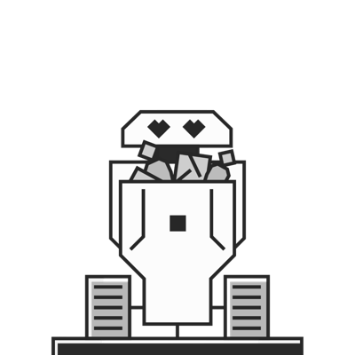
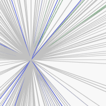

We’re The Frameworks. A B2B brand and marketing agency that gets businesses closer to the people who matter most.
Scroll ↓
Technical offers, complex supply chain and multi-stakeholder audiences – the B2B world is complicated. And we love it. We cut through complexity to uncover powerful propositions that match your goals with your audience’s challenges.
AI is shifting buyer journeys, making LLMs a major stakeholder. We have the expertise and tools to help you harness this opportunity to connect with customers in new ways, ensuring you’re included in those conversations and showing up on your terms.
Brands still need to capture human hearts and minds. There’s no substitute for big, bold ideas, whipsmart messaging and unforgettable digital experiences. Our creativity has been bringing brands to life - and life to brands - for more than three decades.
Every B2B challenge is really about people. No matter how complex or technical it is on paper, we don’t ever lose sight of your audience. What speaks to them. What worries them. What matters most to them. Then, we design experiences to reach them.
The rules are changing every day; there is no final destination. Just increasing pressure to move people to move products and above all, move the needle. We’re committed to using human and technological innovation to move your business forward.

